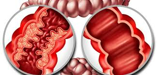

Enfermedad de Crohn
Es una afección por la cual resultan inflamadas partes del tubo digestivo.
Casi siempre compromete el extremo inferior del intestino delgado y el comienzo del intestino grueso.
También puede ocurrir en cualquier parte del tubo digestivo desde la boca hasta el extremo del recto (ano).
La enfermedad de Crohn es una forma de enfermedad intestinal inflamatoria (EII)
Síntomas:
- Los síntomas dependen de la parte del tubo digestivo afectada. Estos síntomas fluctúan de leves a graves, y pueden aparecer y desaparecer con períodos de reagudizaciones.
- Dolor abdominal (zona del vientre) con cólicos.
- Fiebre.
- Fatiga.
- Falta de apetito y pérdida de peso.
- Sensación de que necesita defecar, aun cuando sus intestinos ya estén vacíos (tenesmo). Puede implicar esfuerzo, dolor y cólicos
Causas:
- La causa exacta de la enfermedad de Crohn se desconoce. Es una afección que se presenta cuando el sistema inmunitario del propio cuerpo ataca por error y destruye el tejido corporal sano (trastorno autoinmunitario), principalmente en el tracto digestivo.
- Cuando partes del tubo digestivo permanecen hinchadas o inflamadas, las paredes intestinales resultan engrosadas.
- Neurológicas: Acumulación de placas de beta-amiloide y ovillos neurofibrilares en el cerebro.
Tratamientos:
- Dieta y nutrición